01
Define objective
- Multi-source intake
- Async stages
- Retry-safe state

OCR · JSON Conversion · JSON Validation · Backend Services
General Department of Customs and Excise of Cambodia
Technical Presentation · Senior Development Team · August 2026
Why manual processing fails at customs scale
Three-lane pipeline and production stack
Why a 3B VLM beats larger alternatives
Preprocessing, resolution tuning, classification
LLM-vs-deterministic boundary, 7-layer rules
Key findings, limitations, 6-pillar conclusion
Research, architecture, data collection, live demo
Why manual processing fails at customs scale
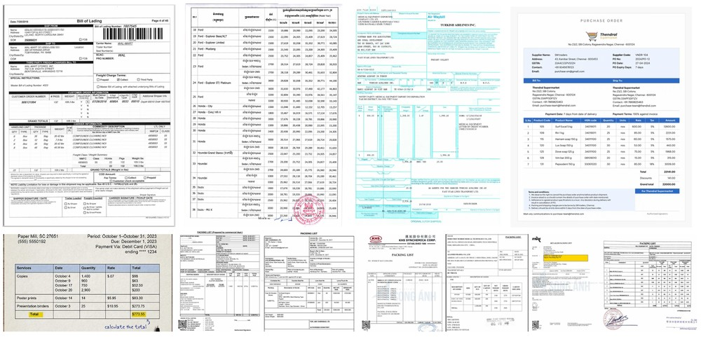
PDF / image input
Markdown with structural fidelity
Schema-conformant output
ACCEPT · REVIEW · REJECT
Downstream use
Objective: an end-to-end pipeline that turns a scanned trade document into validated JSON, ready for SAD comparison.
| Criterion | Target |
|---|---|
| Accuracy | > 90% field-level extraction across all 5 document types |
| Fidelity | preserve tables, reading order, and page provenance |
| Throughput | multi-page documents processed without timeout |
| Maintainability | configuration-driven, hardware-agnostic |
| Auditability | every decision logged and traceable |
Out of scope: model fine-tuning, mobile UI, real-time clearance
Scanned PDF / image → Markdown + classification
Markdown → schema-conformant JSON
Layered rule engine
Orchestration · queues · storage
| Module | Responsibility | Deliverable |
|---|---|---|
| OCR (gdce_ocr) | scanned PDF / image to Markdown + classification | .md per page |
| JSON conversion (gdce_mapping) | Markdown to schema-conformant JSON | ProcessedDocument |
| JSON validation | layered rule engine | ACCEPT / REVIEW / REJECT |
| Backend | orchestration, queues, storage | jobs, status, artifacts |
Three-lane pipeline and production stack

| Layer | Technology | Role |
|---|---|---|
| OCR engine | dots.mocr (3B VLM) | text, tables, graphics to Markdown |
| Mapping LLM | Qwen3-4B-Instruct-FP8 | schema-constrained JSON extraction |
| Model serving | vLLM (PagedAttention) | high-throughput GPU inference |
| Cloud GPU | Vast.ai | inference containers (16 GB VRAM tested) |
| API | FastAPI | orchestration, health/readiness, admin |
| Queues | Redis 7 + Celery | 3 dedicated lanes: ocr / converter / validation |
| Storage | MinIO + PostgreSQL 16 | object store + authoritative state |
| Scheduling | APScheduler | nightly batch window, timezone-aware |
| Deployment | Docker Compose | shared ocr-network, independently scalable |
Why a 3B VLM beats larger alternatives
Extraction accuracy, structured-output fidelity (tables, nested layouts), English and multilingual support if possible (Khmer, Chinese), GPU footprint, downstream validation impact.
Document categories, digital + scanned, manual check ground truth. Metrics: accuracy, table fidelity, item alignment, latency.
| Model | Invoice | Packing | BoL | Truck | Airway |
|---|---|---|---|---|---|
| dots.mocr | ✔ | ✔ | ✔ | ✔ | ✔ |
| MinerU2.5 | ✔ | ✔ | ✔ | ✔ | — |
| dots.ocr | ✔ | ✔ | ✔ | ✔ | — |
| DeepSeek-OCR-2 | — | — | ✔ | ✔ | — |
| Qwen3-4B-VL | ✔ | ✔ | ✔ | — | — |
| GLM-OCR | — | ✔ | ✔ | — | — |
| Docling | ✔ | ✔ | — | — | — |
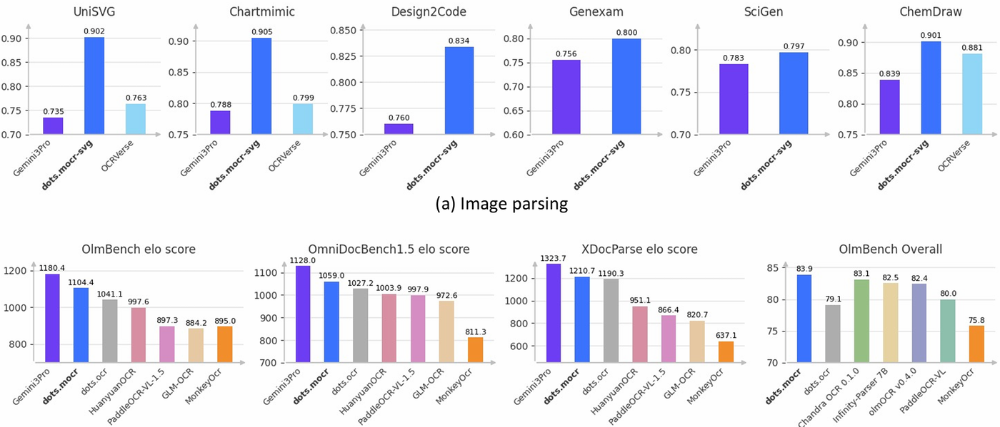
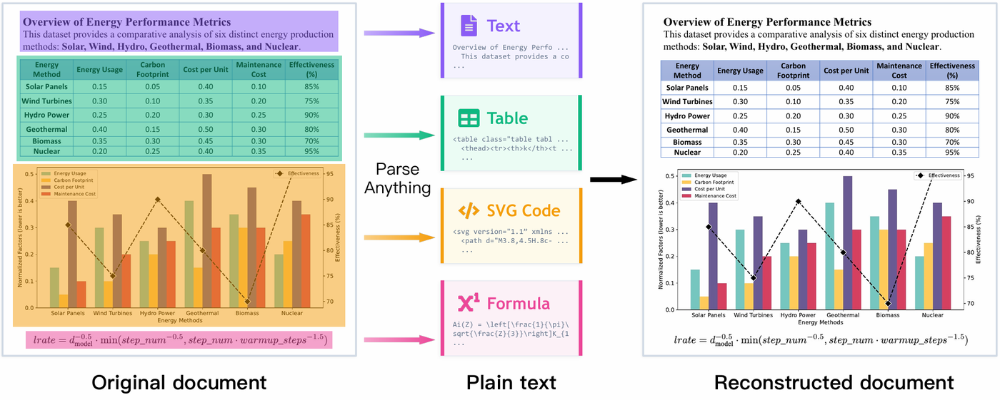
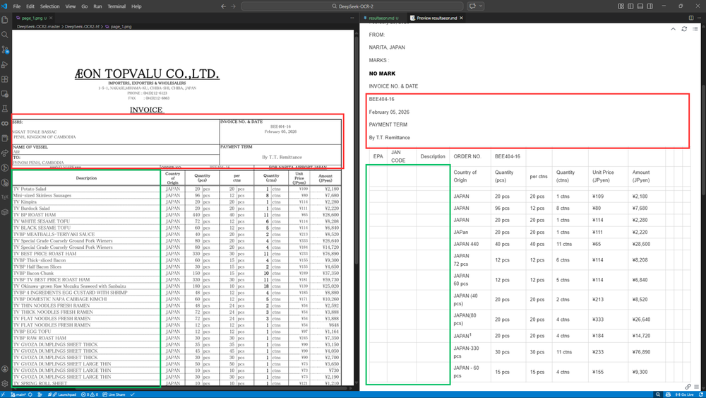
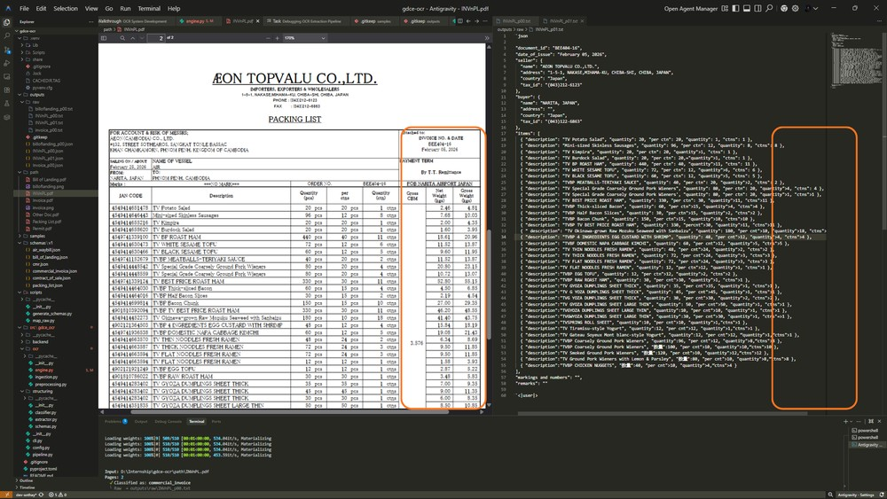
Text-only structured field extraction: temp 0.1, top-k 1, thinking disabled
| Model | Params / Quant | Modality | Verdict |
|---|---|---|---|
| Qwen3-4B-Instruct-FP8 | 4B, FP8 | Text-only | ✅ Selected |
| Gemma-3-4b-it | 4B | Multimodal | Comparable accuracy, unnecessary vision overhead |
| Qwen3.5-4B | 4B | Multimodal | No gain over text-only |
| Qwen2.5-7B-Instruct-AWQ | 7B, AWQ | Text-only | 75% more VRAM, no accuracy gain |
Temperature: an LLM generation setting that controls randomness. Low values (0.1 here) make output more deterministic and consistent; high values allow more varied, creative text. For structured field extraction, low temperature reduces inconsistent or hallucinated values.
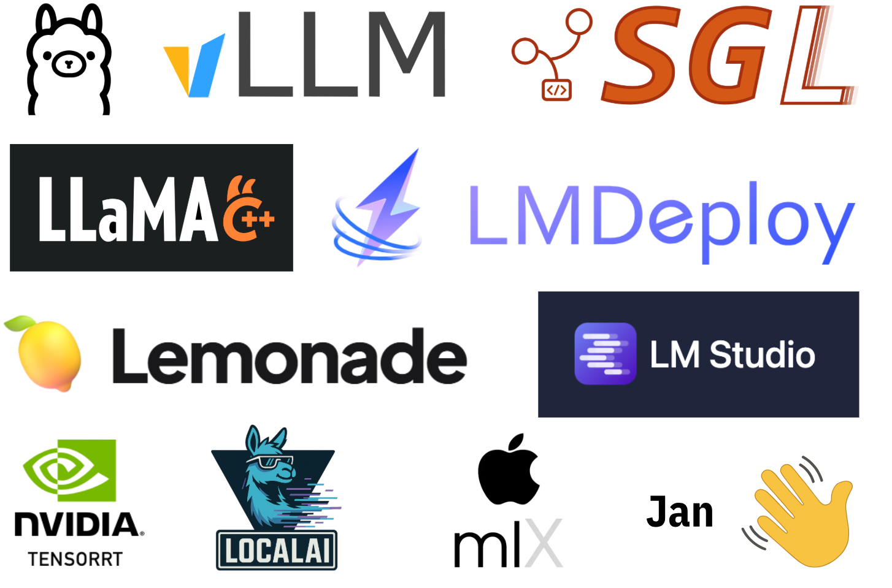
vLLM introduces PagedAttention to eliminate KV cache waste, boosting LLM serving throughput by 2–4× without increasing latency.
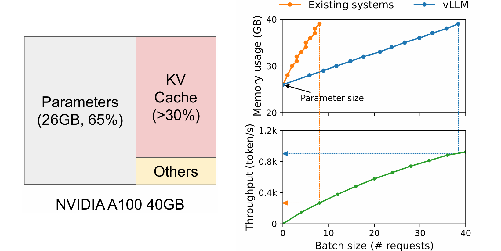
| Feature | vLLM | Ollama | SGLang | TensorRT-LLM |
|---|---|---|---|---|
| Primary goal | High-throughput serving | Local simplicity | Max throughput / speed | Max performance (NVIDIA) |
| Best for | Production APIs | Prototyping / local | Specialized / complex | Enterprise NVIDIA |
| Performance | High | Low / medium | Highest | Highest |
| Throughput | Excellent | Low / moderate | Excellent | Excellent |
| Ease of use | Moderate | Excellent | Moderate / low | Low |
| Hardware | GPU / CPU (agnostic) | GPU / Apple Silicon | GPU (H100 / A100) | NVIDIA only |
Deployment docs: github.com/rednote-hilab/dots.ocr#2-deployment
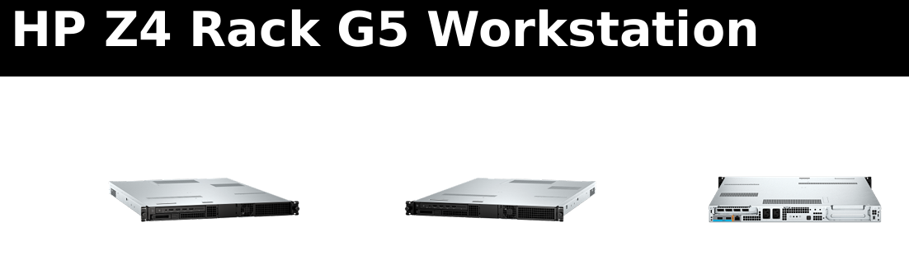
CUDA_VISIBLE_DEVICES=0 vllm serve rednote-hilab/dots.mocr \
--tensor-parallel-size 1 --gpu-memory-utilization 0.85 \
--chat-template-content-format string --trust-remote-code.env config-driven endpointsPreprocessing, resolution tuning, classification
| Component | Responsibility |
|---|---|
cli |
entry points: run-ocr (single file), run-ocr (folder) |
config |
.env-driven settings, model endpoints |
ingestion |
source document handling, file-type detection |
preprocessing |
4-stage page preparation pipeline |
inference |
dots.mocr calls through vLLM |
classification |
document-type labeling, filename convention |
outputs |
Markdown artifacts under outputs/raw |
Data objects: SourceDocument, PreparedPage,
OCRRequest, OCRResult, ProcessedPage
run-ocrCLI
File-type detection (PDF / image)
4-stage page prep: resolution, margins, scaling, PNG
★ key to accuracyvLLM · chunked pages
~30-60 s / pageLabels page: type, number, date
outputs/raw/<stem>_p<N>_<doc_type>_<YYYYMMDD>.md
outputs/raw/Invoice_2023_000123_p1_commercial_invoice_20260816.md
stem · page no. · doc type · date · one file per page
unk for manual reviewBest image from the PDF xref; 200 DPI fallback
Trim dead whitespace around page content
Factor-28 grid, [min_pixels, max_pixels]
Preserves thin grid lines and stamps
xref table; 200 DPI fallback
[min_pixels, max_pixels] bounds
The same page captured twice — raw extraction and prepared input — both before the model is requested.
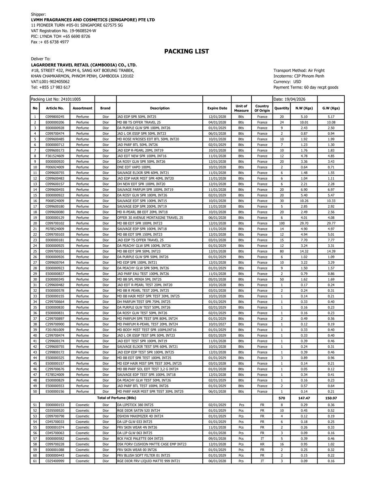
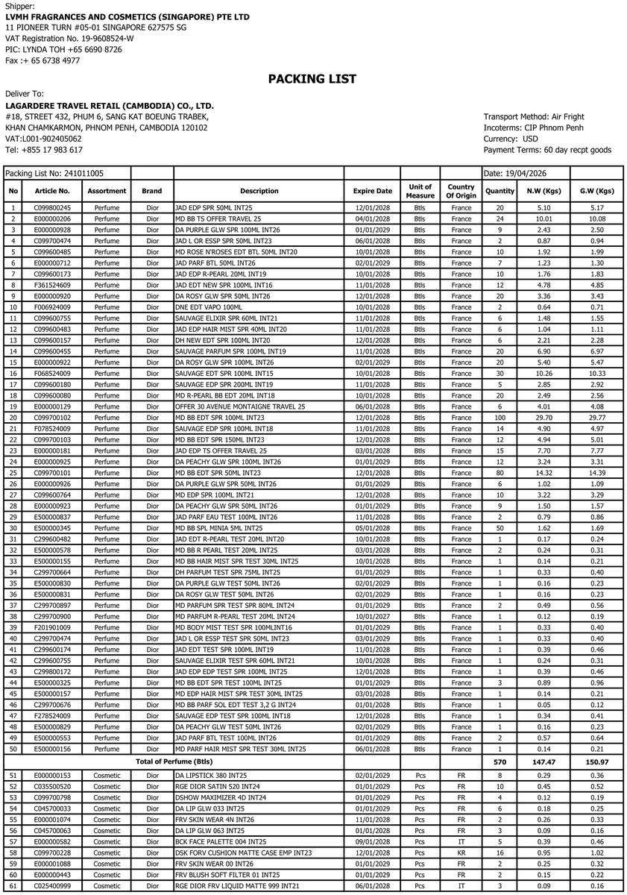
Target ~4M pixels instead of full native (~11M). Result: 4-5x speed improvement with no measurable accuracy loss.
| Resolution | Time per page |
|---|---|
| Full native (~11M px) | 130-200 s |
| Target ~4M px | 30-60 s |
Factor-28 alignment prevents the model from downscaling unpredictably.
TARGET_IMAGE_PIXELS=4000000
PAGE_CHUNK_SIZE=8
PREP_WORKERS=4
MAX_PDF_PAGES_PER_DOCUMENT=300
TEMPERATURE=0.0
MAX_NEW_TOKENS=16000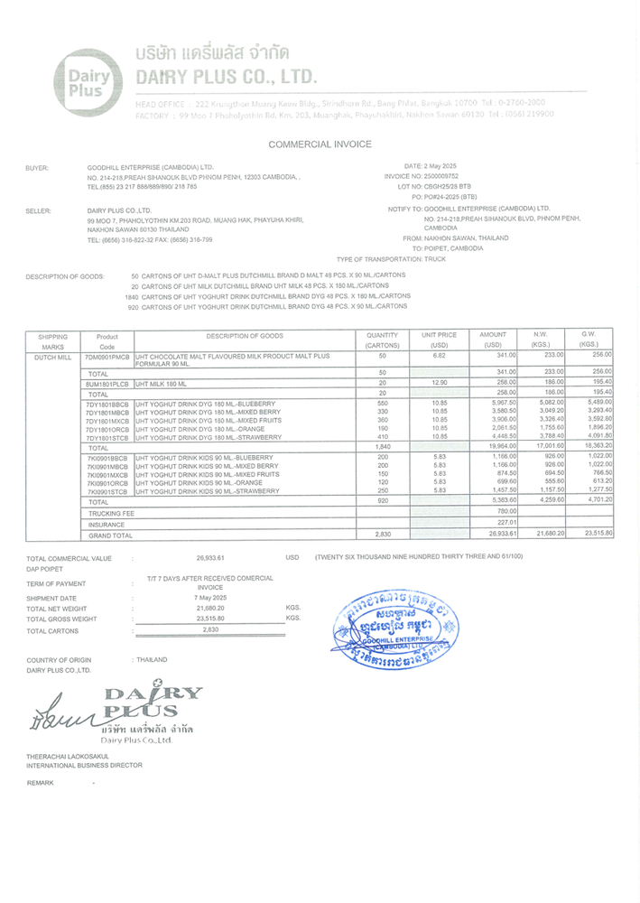
Classifier labels: commercial_invoice,
packing_list, bill_of_lading, air_way_bill, truck_bill,
unk
Filename pattern (one artifact per page):
<stem>_p<N>_<doc_type>_<YYYYMMDD>.md
| Part | Meaning |
|---|---|
<stem> |
sanitized original filename |
_p<N> |
original page number |
<doc_type> |
classifier result |
<YYYYMMDD> |
classification date |
unk for manual reviewThe classifier is a rule-based method — not 100% accurate.
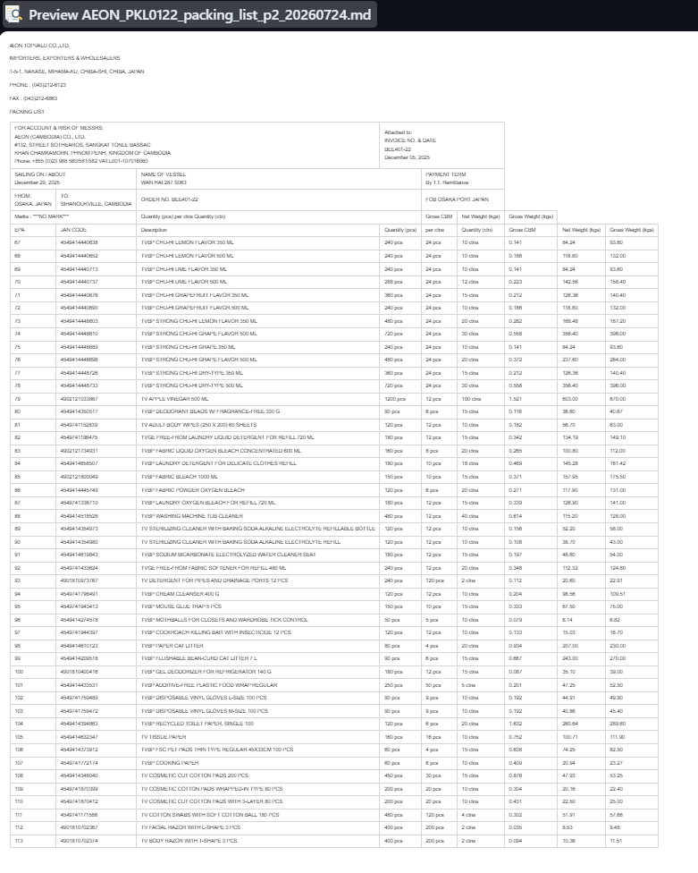
stem_pN_doc_type_date.md — one artifact per page,
sortable and traceable.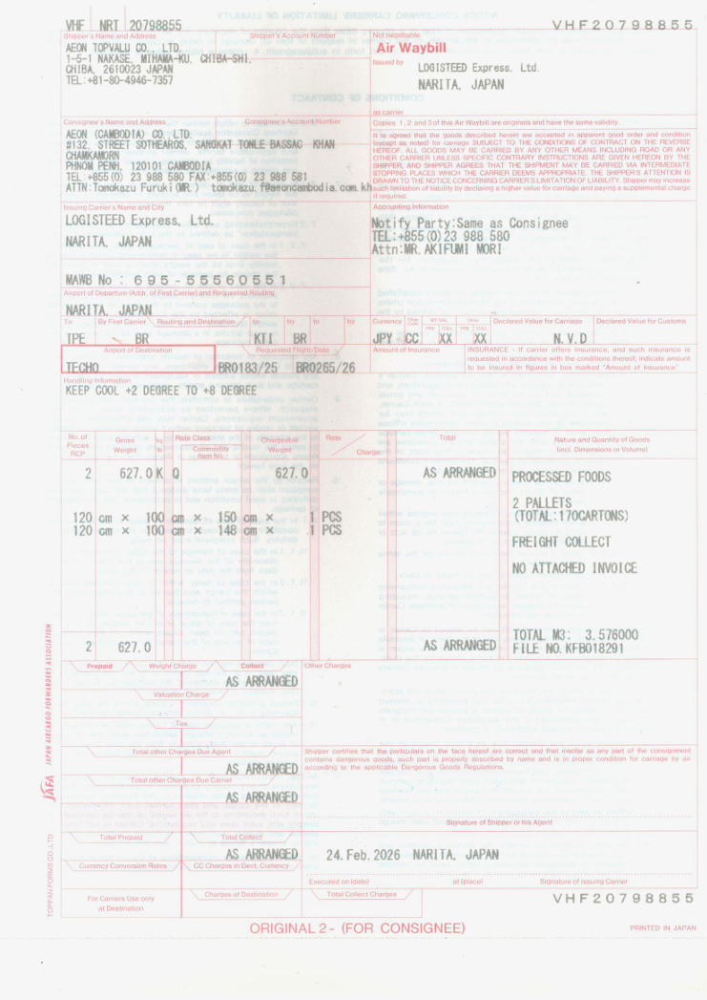
VHF NRT 20798855
VHF 20798855
| Shipper's Name and Address | Shipper's Account Number | Not negotiable | Air Waybill | Issued by | LOGISTEED Express, Ltd. | ||
| AEON TOPVALU CO., LTD. 1-5-1 NAKASE, MIHAMA-KU, CHIBA-SHI. CHIBA, 2610023 JAPAN TEL: +81-80-4946-7357 |
NARITA, JAPAN | ||||||
| Consignee's Name and Address | Consignee's Account Number | as carrier | Copies 1, 2 and 3 of this Air Waybill are originals and have the same validity. | ||||
| AEON (CAMBODIA) CO., LTD. #132, STREET SOTHEAROS, SANGKAT TONLE BASSAC KHAN CHAMKAMORN PHNOM PENH, 120101 CAMBODIA TEL: +855 (0) 23 988 580 FAX: +855 (0) 23 988 581 ATTN: Tomokazu Furuki (MR.) tomokazu@aeon cambodia.com.kh |
It is agreed that the goods described herein are accepted in apparent good order and condition (except as noted) for carriage SUBJECT TO THE CONDITIONS OF CONTRACT ON THE REVERSE HEREOF. ALL GOODS MAY BE CARRIED BY ANY OTHER MEANS INCLUDING ROAD OR ANY OTHER CARRIER UNLESS SPECIFIC CONTRARY INSTRUCTIONS ARE GIVEN HEREON BY THE SHIPPER, AND SHIPPER AGREES THAT THE SHIPMENT MAY BE CARRIED VIA INTERMEDIATE STOPPING PLACES WHICH THE CARRIER DEEMS APPROPRIATE. THE SHIPPER'S ATTENTION IS DRAWN TO THE NOTICE CONCERNING CARRIER'S LIMITATION OF LIABILITY. Shipper may increase such limitation of liability by declaring a higher value for carriage and paying a supplemental charge if required. | ||||||
| Issuing Carrier's Name and City | Accounting Information | Notify Party: Same as Consignee | |||||
| LOGISTEED Express, Ltd. | TEL: +855 (0) 23 988 580 | ||||||
| NARITA, JAPAN | Attn: MR. AKIFUMI MORI | ||||||
| MAWB No | 695-55560551 | ||||||
| Airport of Departure (Addr. of First Carrier) and Requested Routing | |||||||
| NARITA, JAPAN | |||||||
| To | By First Carrier | Routing and Destination | to | by | to | by | |
| TPE | BR | KTI | BR | ||||
| Airport of Destination | Requested Flight/Date | ||||||
| TECHO | BR0183/25 | BR0265/26 | |||||
| Handling Information | |||||||
| KEEP COOL +2 DEGREE TO +8 DEGREE | |||||||
| No. of Pieces RCP | Gross Weight kg lb | Rate Class | Commodity Item No. | Chargeable Weight | Rate Charge | Total | Nature and Quantity of Goods (incl. Dimensions or Volume) |
| 2 | 627.0 K | Q | 627.0 | AS ARRANGED | PROCESSED FOODS | ||
| 120 | cm x 100 | cm x 150 | cm x | 1 | PCS | 2 PALLETS (TOTAL:170CARTONS) | |
| 120 | cm x 100 | cm x 148 | cm x | 1 | PCS | FREIGHT COLLECT | |
| NO ATTACHED INVOICE | |||||||
| 2 | 627.0 | AS ARRANGED | TOTAL M3: 3.576000 FILE NO. KFB018291 |
||||
| Prepaid | Weight Charge | Collect | Other Charges | ||||
| Valuation Charge | AS ARRANGED | ||||||
| Tax | AS ARRANGED | ||||||
| Total other Charges Due Agent | AS ARRANGED | Shipper certifies that the particulars on the face hereof are correct and that insofar as any part of the consignment contains dangerous goods, such part is properly described by name and is in proper condition for carriage by air according to the applicable Dangerous Goods Regulations. | |||||
| Total other Charges Due Carrier | AS ARRANGED | ||||||
| Total Prepaid | Total Collect | AS ARRANGED | 24. Feb. 2026 | NARITA, JAPAN | Signature of Shipper or his Agent | ||
| Currency Conversion Rates | CC Charges in Dest. Currency | AS ARRANGED | |||||
| For Carriers Use only at Destination | Charges at Destination | Total Collect Charges | Executed on (date) | at (place) | Signature of issuing Carrier | ||
| VHF 20798855 | |||||||
JAFA JAPAN AIRCARGO FORWARDERS ASSOCIATION
TOPPAN FORMS CO., LTD.
ORIGINAL 2 - (FOR CONSIGNEE)
PRINTED IN JAPAN
Dense Air Waybill structure, multi-span tables, and routing metadata faithfully extracted to clean Markdown.
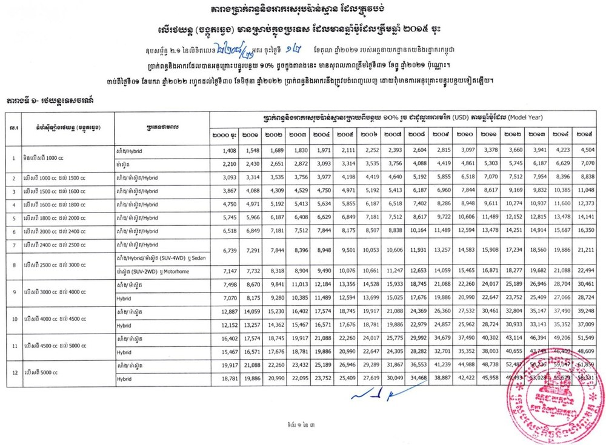
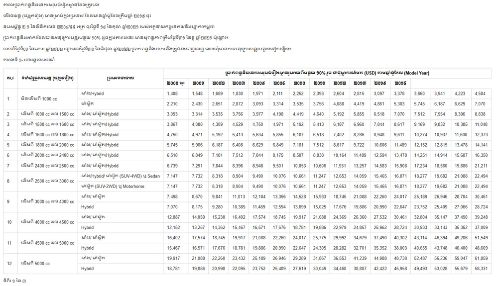
Complex Khmer script with dense numeric table and stamps, faithfully reconstructed as structured Markdown.
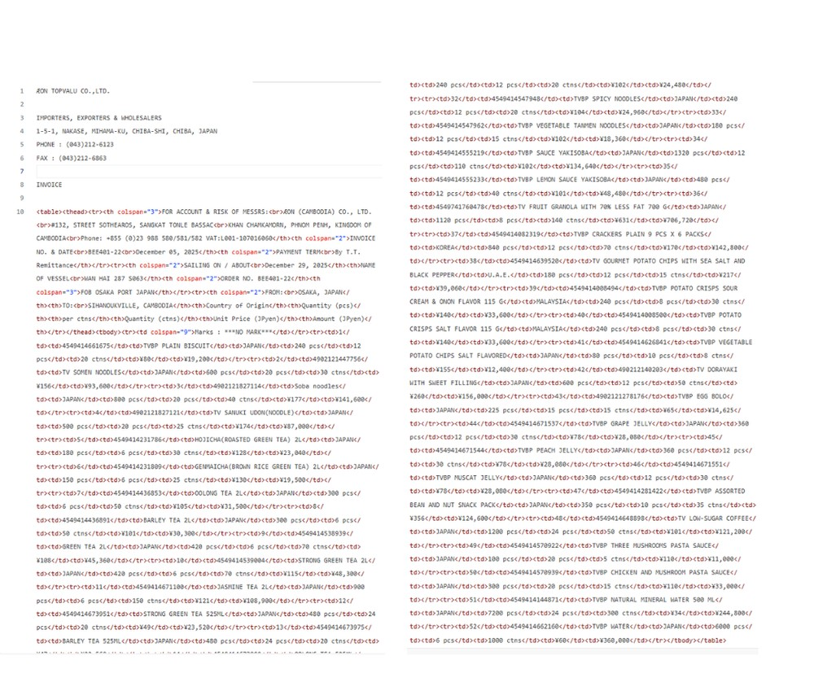
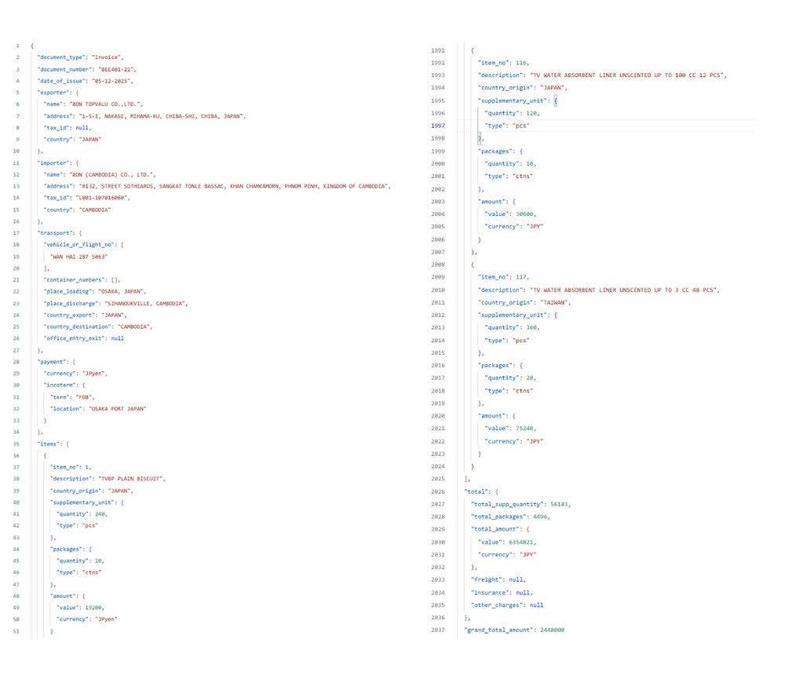
Markdown preserves layout; JSON is schema-conformant and ready for validation.
End-to-end OCR in action — scanned documents to classified Markdown.
Live run of the gdce_ocr pipeline on real documents.
LLM & deterministic boundary, 7-layer rules


Without header context, subsequent pages struggle.

Carrying header forward enables seamless multi-page interpretation.

Dynamic instruction to retain headers.

Raw docs often have ambiguous unit measures.

Models frequently hallucinate or misuse raw unit formats.
Maps raw extraction strictly into standard UNECE taxonomy.
Deterministic checks compute sums exactly.
Real-time processing

Automated triage classifies each document based on deterministic validation rules, configuration thresholds, and computed confidence.
| Decision | Validation State | Automated Action | Operational Impact |
|---|---|---|---|
| ✔ ACCEPT | All key fields and item values remain within configured tolerances | Pass validation automatically | Fast clearance with no manual intervention |
| ⚠ REVIEW | Minor mismatch or ambiguous value requiring human confirmation | Highlight variances for customs officer review | Focused inspection on the exact flagged fields |
| ✖ REJECT | Critical mismatch, missing data, or severe data-quality issue | Stop processing and record reasoned rationale | Revenue protection and stronger control over false declarations |
Validation is not subjective. It is evidence-based comparison against official customs truth, scored and classified with clear thresholds.
DB entry is what was declared, not what's on the document — hard to tell typos from real errors
FOB vs. DAP are both valid; system can't tell a legitimate restatement apart from a mistake
Totals change by incoterm (FOB ≠ DAP); comparing across different terms is invalid
Some DB items use formulas (e.g., "3-8", "6+9") — OCR errors break the lookup
End-to-end validation in action — OCR output compared against the official customs record in real time.
Key findings, limitations, and sovereign AI conclusion
dots.mocr is the only model meeting 90+ accuracy across all 5 document types, with high-fidelity Khmer, English, French extraction on real customs documents.
Resolution tuning delivers a 4-5x speed improvement with accuracy maintained; PagedAttention enables concurrent high-resolution processing without OOM.
Deterministic normalization + careful model selection beats naive model scaling. Validation reduced false-positive mismatches; preprocessing quality drives accuracy.
unk for manual reviewEstablished rigorous benchmark methodology, proving IDP feasibility and high extraction fidelity for Cambodian customs declaration workflows.
Identified RedNote Lab's dots.mocr (3B VLM) as the top vision model, outperforming other baselines on dense layouts, stamps, & Khmer tables.
Selected Qwen3-4B-Instruct-FP8 (Text-only) for schema JSON mapping, served via vLLM PagedAttention for high concurrency.
Developed an auditable multi-stage validation engine (normalization, item alignment, fuzzy thresholds) guaranteeing zero false positives.
Engineered dynamic resolution scaling, achieving a 4–5× speed acceleration for high-resolution images with 100% accuracy retention.
Tailored architecture for GDCE's sovereign HP Z4 Rack G5 (RTX Pro 4500 32GB), ensuring complete data privacy & overnight batch execution.
The research identifies the optimal model & serving stack for GDCE: high extraction accuracy, auditable validation, and sovereign on-premise AI.
PRODUCTION READY · GDCE 2026Orchestration, data collection, service management, and deployment
API Layer
REST API, health / ready, orchestration

Database
Jobs, documents, outputs, events, audit

Object Storage
S3 store for PDFs and converted files

Scheduler
Lane polling and nightly batch window


Task Queue
3 stage queues with retries and isolation

Converter
Word / Excel to PDF conversion

Testing
Unit and integration test coverage

Container Runtime
On-prem deploy on ocr-network


Questions?
Intelligent Document Processing System · General Department of Customs and Excise of Cambodia